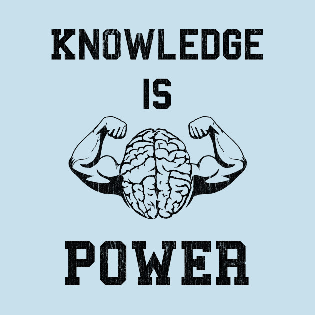
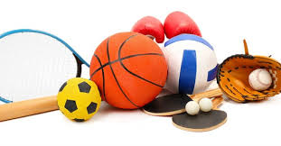

Email: jayh5833@gmail.com
I started programing for a Summer Intensive called All Star Code
I am a rising Junior attending Gateway High School. I played a wide variety of sports from 2nd Grade to Eighth Grade. I like to read, play games, and hang out with friends in my spare time.
From around the time I was a baby to a few years ago, my family and I used to travel outside of the country and explore some of the best, coolest, and old places around the world. I love to travel and explore new places and see what kind of things other cultures have to offer.
Some of the sports I used to play were: Soccer, Football, Baseball, and Wrestling. I loved playing all of these sports going through middle school but eventually lost interest in them once i entered high school.
As I said before, I like to read books in my spare time. I generally like to read books with fantasy, action, and adventure in them. Rick Riordan, author of the Percy Jackson Series, is my favorite author. His books are very interesting and I reccomend them to anyone with a large imagination because some of the scenes are very hard to imagine.
 